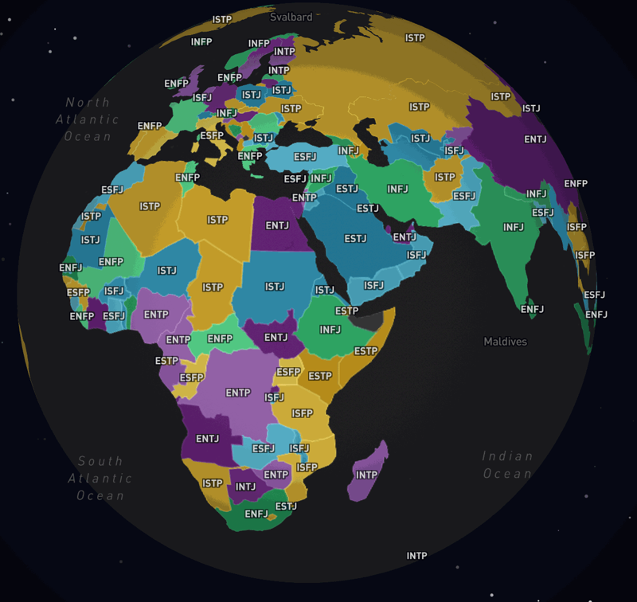

Human Mobility & Travel Behavior
Analyzing how people structure their daily movements and what shapes destination choices across urban and rural contexts.
PhD · Geography · UC Santa Barbara
Geospatial data scientist bridging human mobility, GeoAI, and urban systems to make cities more accessible, equitable, and intelligently navigated.
Growing up in rural Guizhou, China, I was first appointed class leader at age six — not because anyone asked if I wanted to, but because someone had to. That sense of stewardship has shaped everything since. When I volunteered for typhoon cleanup at my university in Xiamen and stood among uprooted trees and damaged streets for the first time, I felt the raw tension between nature's force and the fragile city we call home. That moment became a compass.
My research journey has taken me from tourism geography to ecological network construction, from land-use spatial planning across China's provinces to analyzing human mobility patterns with federal survey data in California. What looks like a winding path is, in fact, a deepening question: how does spatial structure shape outcomes — for people, for ecosystems, for the communities we build?
"I don't want human beings to pollute beautiful garden cities. I don't want haze to cover the blue sky! I am on the right track to protect mother earth!"
— Personal Statement


There is a deceptively simple observation at the center of my research: two people can live a mile apart and inhabit entirely different cities. One has a car, a nearby grocery store, and a hospital within ten minutes. The other relies on buses that run twice a day, commutes ninety minutes to a job across town, and has never had a primary care doctor within reach. The distance between them is walkable. The gap in what they can access is not. That gap is not accidental — it is built into the spatial structure of cities, and it can be measured, modeled, and, with the right frameworks, changed.
That is why I study human mobility and urban accessibility: not because the data is interesting, though it is, but because the data is a proxy for something much more concrete — who gets to participate fully in the city, and who is quietly excluded from it. When I work with survey data tracing how California households structure their daily movements, I am not just mapping trip chains. I am trying to understand the logic of real people's lives, and whether the infrastructure around them is working for them or against them. I want planners and engineers to be able to see those people when they make decisions, not just the aggregate flows.
I also know that no one does this work well alone. The most important things I have learned in this field came from a twenty-person field team I coordinated during a land assessment project in Hubei — from the moment a surveyor pointed out something in the data that I had not thought to look for, and from the slower process of trying to explain an ecological index to a local official who needed the result to mean something actionable. Research that cannot be translated back to the people it is about is research that stops halfway.
What ultimately drives me is the belief that spatial data science — done honestly and with the right questions — can make the invisible visible. The disparities in urban accessibility are not hidden. They are just rarely centered. I want to be part of the generation of researchers who center them.
Analyzing how people structure their daily movements and what shapes destination choices across urban and rural contexts.
Applying machine learning and AI to geographic data for pattern recognition, prediction, and planning insights.
Measuring who can reach what, and designing frameworks that expose and address spatial disparities.
Evaluating vehicle miles traveled, fleet structures, and modal shifts to inform sustainable transport policy.
Processing multi-source satellite imagery to track landscape change, ecological health, and infrastructure conditions.
Integrating landscape ecology with urban planning to build resilient, connected natural systems.
From California freeways to Dominican mangroves — my work spans scales, systems, and continents.
Using 2017 NHTS California data, I developed a distance-informed framework that links daily mobility motifs — the structural patterns of how people sequence activities — to cumulative destination-based accessibility. By integrating activity-space features and establishment-density classifications, the work reveals how movement patterns shape who can reach what across urban, suburban, and rural geographies.
View Related PublicationCo-authored investigation into correlations between annual vehicle miles traveled (VMT) and household fleet composition and fuel types using paired 2017 and 2022 NHTS data. Accepted for presentation and publication at the World Conference on Transport Research, Toulouse, France.
Processed multi-source geospatial data to map mangrove area and canopy height distributions across the Montecristi Wetlands. Designed spatial optimization models for inventory plot allocation and analyzed 10-year mangrove decline (2013–2023). Presented at SWAAG/AGX 2024.
Created soil maps from the gSSURGO database to support underground pipe service life evaluation across Charlotte. Improved the Pipe Assessment and Selection Software (PASS) by converting legacy VBA code to Python, enabling scalable and reproducible stormwater infrastructure prediction.
Designed an interactive mapping template using Esri Experience Builder to visualize climate inequality indicators and community resilience metrics across Charlotte neighborhoods. Provided training for city partners on adding maps, updating datasets, and interpreting spatial equity indicators.
Contemporary Tourism, 2019(3): 70–75.
2019
World Conference on Transport Research (WCTR 2026), Toulouse, France.
2026
AAG Annual Meeting, Minneapolis, MN.
2026
SWAAG/AGX, San Marcos, TX.
2024
32nd Graduate Sci-tech Forum, China University of Geosciences.
2021
Conducted lab sessions for spatial and transportation data analysis; guided students in R/RStudio spatial statistics.
Developed lab materials for spatial clustering, spatial autocorrelation, and spatial regression analysis; led weekly lab sessions using R/RStudio.
Assisted with introductory world geography course; graded assignments and supported student learning.
Collated research outcomes; designed course practical plans and assessed final assignments.
$600 · UCSB Geography
$1,100 · UNC Charlotte
3 consecutive years · China University of Geosciences
3 consecutive years · Ministry of Education, China
China University of Geosciences
College of Tourism · Huaqiao University
Top ~5% nationally · China University of Geosciences
Huaqiao University
Huaqiao University
National selection · 200 teams across China · Ministry of Culture and Tourism
Huaqiao University
3 consecutive years · Ministry of Education, China
4 consecutive years · Ministry of Education, China
Huaqiao University
Building tools and curating resources for the global GIS community.

The most comprehensive GIS encyclopedia on GitHub — covering Data, Tools, AI Prompts, Visualization, Web Dev & Academic resources for GIS professionals worldwide.

Interactive 3D globe visualization of global AI acceptance across 121 countries, compiled from 46 data sources. Built with D3.js and Three.js for immersive data exploration.

An interactive 3D globe that playfully maps MBTI personality types to countries worldwide — combining geospatial visualization with psychological data for an unexpected perspective on global culture.
Open to research collaborations, speaking invitations,
and conversations about geospatial science and urban equity.